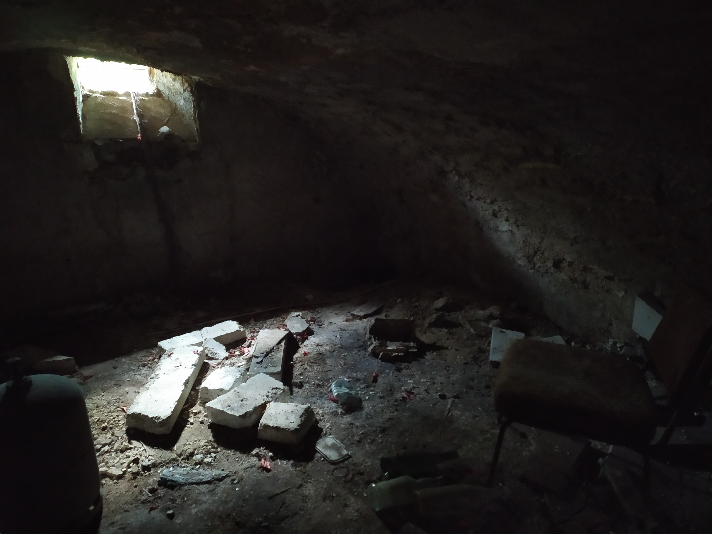
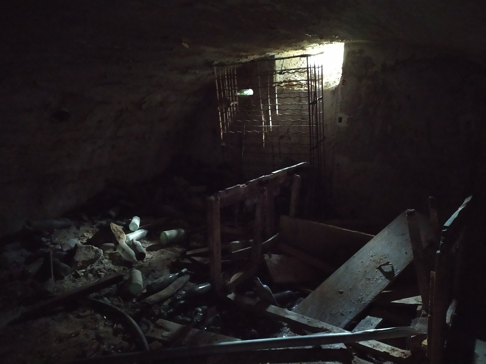
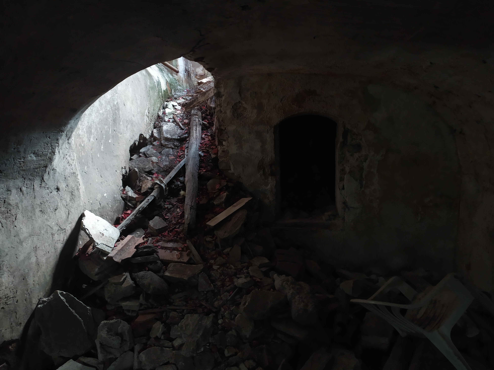
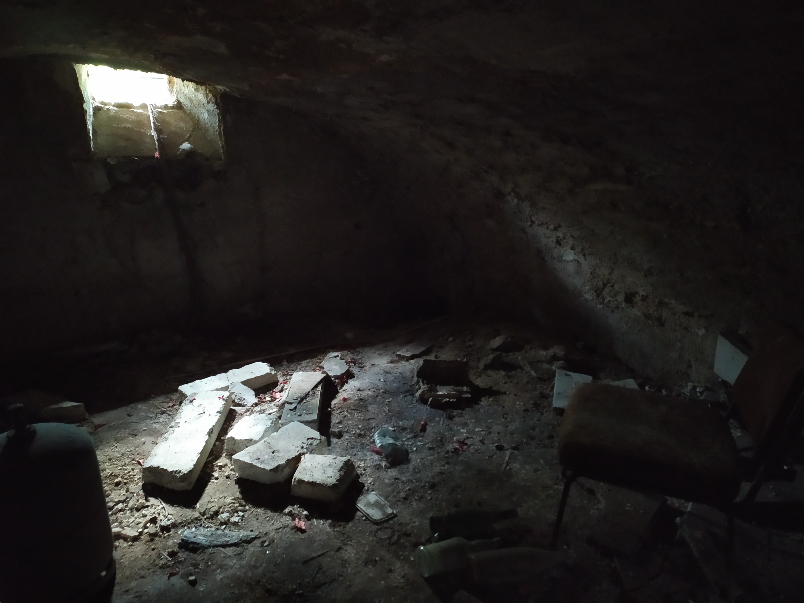
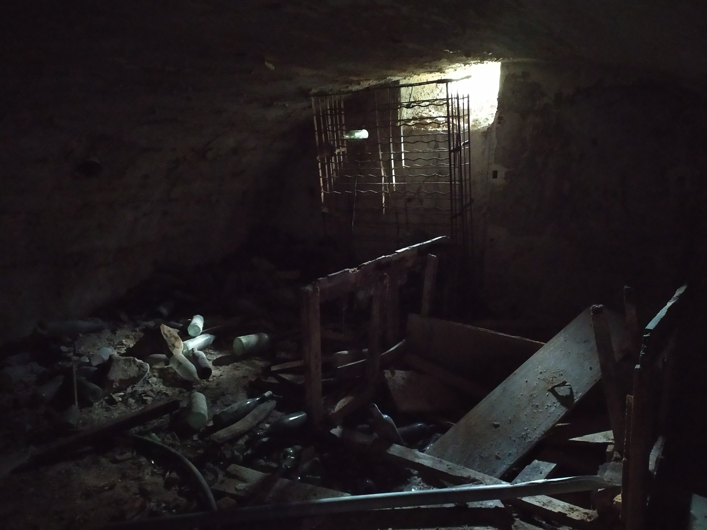
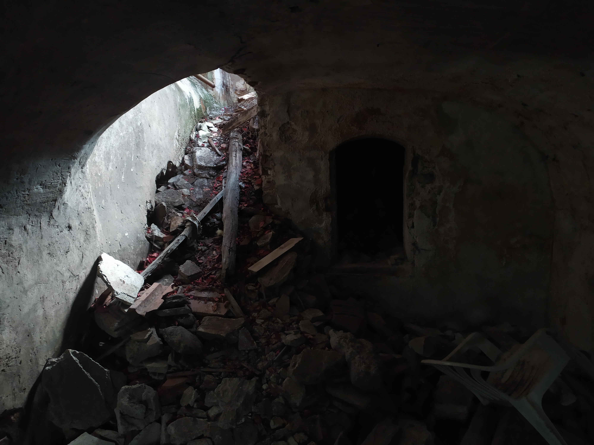
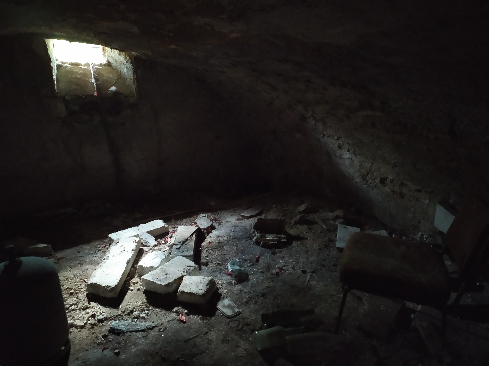
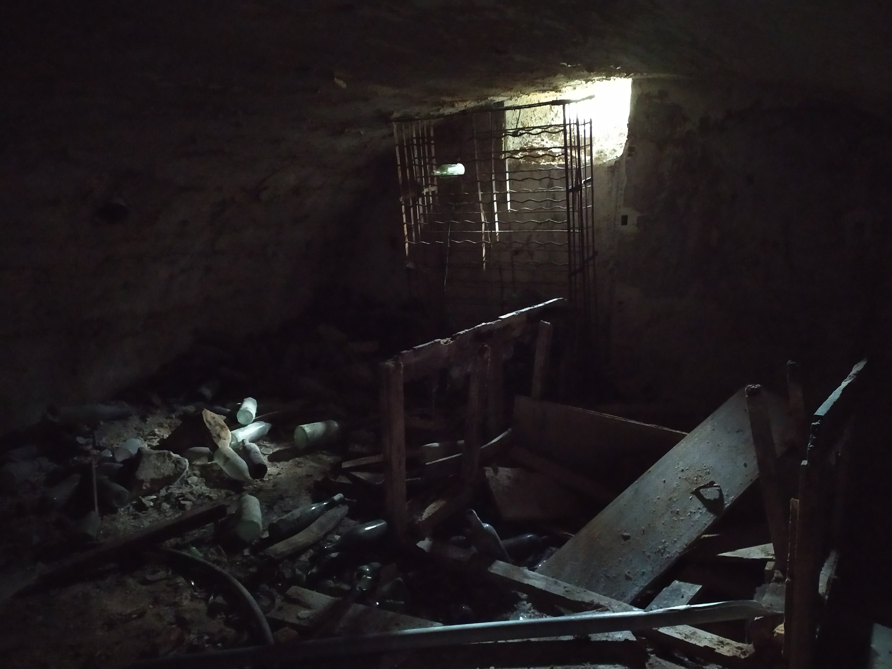
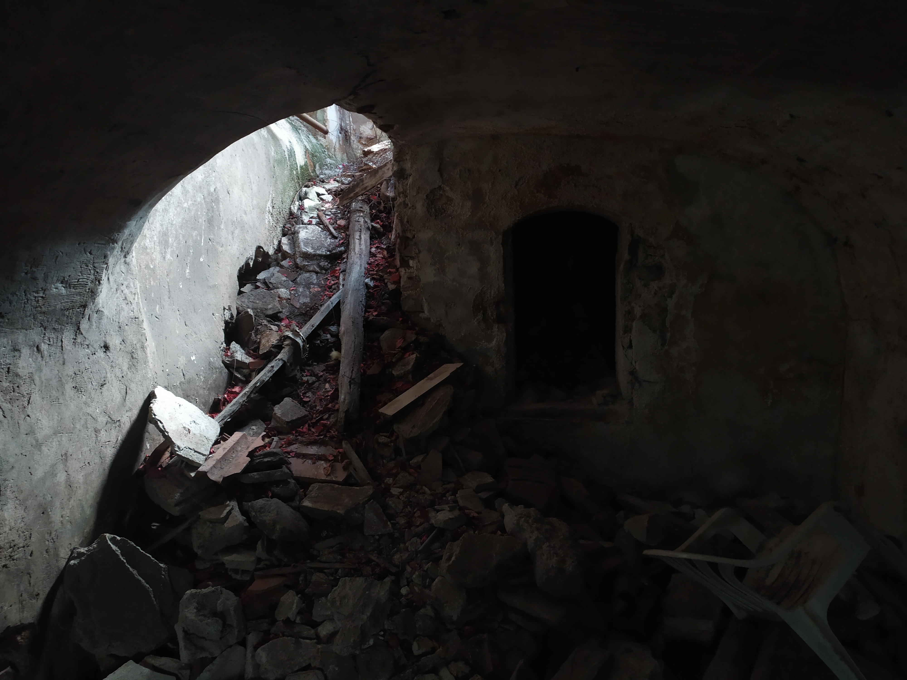
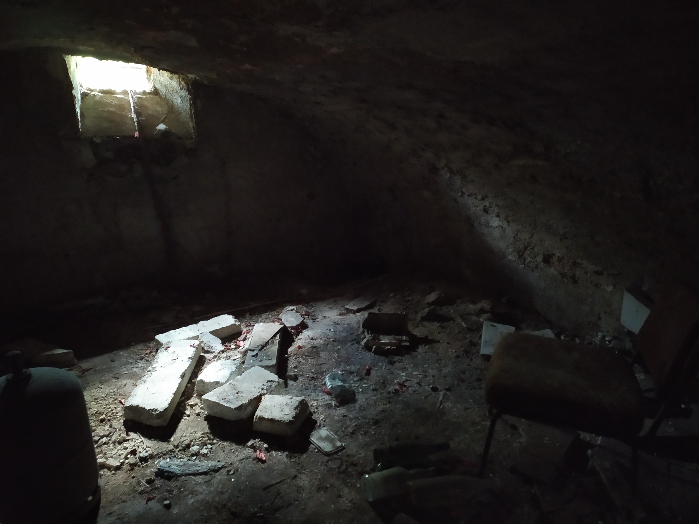
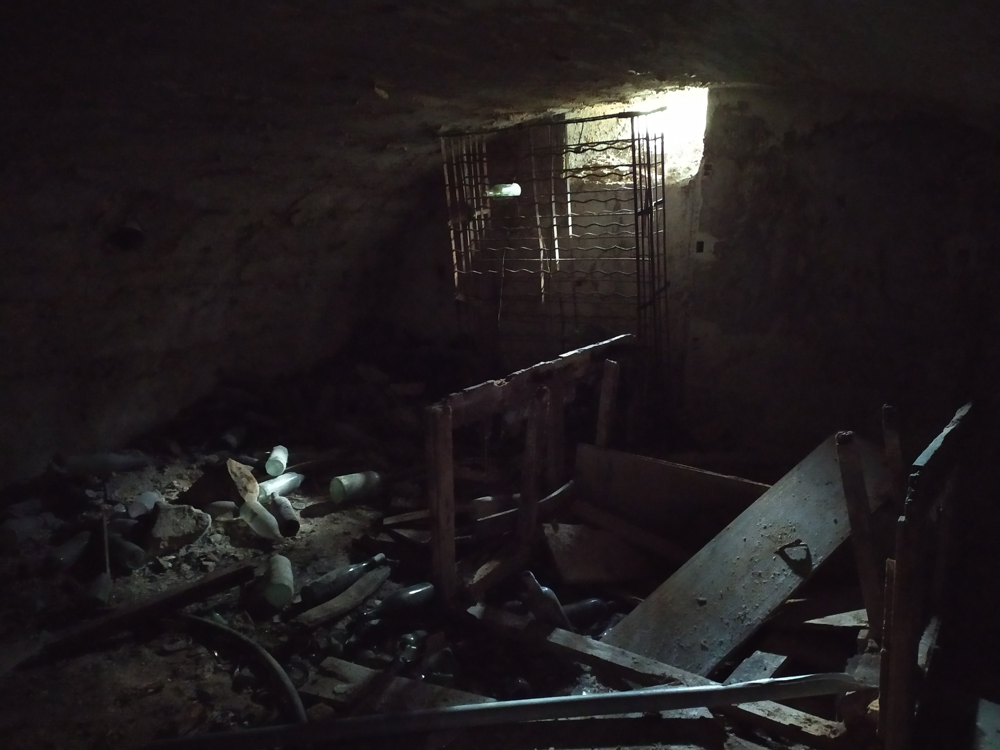
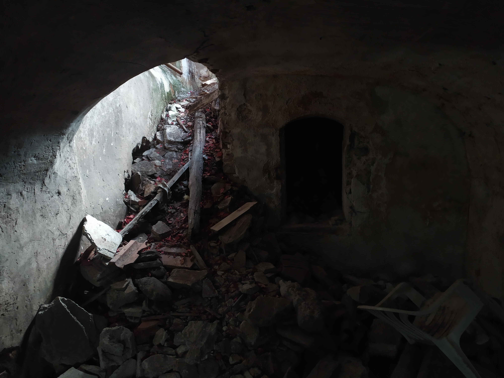
Ma première exprérience dans l'urbex fut ce manoir. Placé au centre d'une prairie toute proche d'une autoraute, ce manoir est assez facile d'accès. En ce balandant dans la forêt non lointaine du site, ou en venant par la route, il est peu probable de louper ce bel édifice. Pour pouvoir voir de plus près le bâtiment, il faut être à l'aise dans ses baskets (mais également ne pas avoir peur de ce salir en descendant le fossé qui l'entoure...). Une fois ce fossé passé, il reste plus qu'à trouver le bon endroit pour rentrer. Ou plutôt le bon trou, parce que vous vous imaginez bien qu'il n'y a plus de porte d'entrée. Un petit tour de l'extérieur et hop ! un point d'accès pas trop compliqué s'offre à moi. J'escalade et me voici à l'intérieur du manoir. Dès mon arrivée je fut subjuguée par la beauté du lieu (malgré le grand désordre...). Je débutai mon exploration par le rez-de-chaussé. J'avançai pièce par pièce passant au dessus de poutres et gravas. Je remarquai rapidement que le plafond entre le rdc et le premier étage s'était éffondré, ou s'il tenait encore, il était sûrement pourri.

 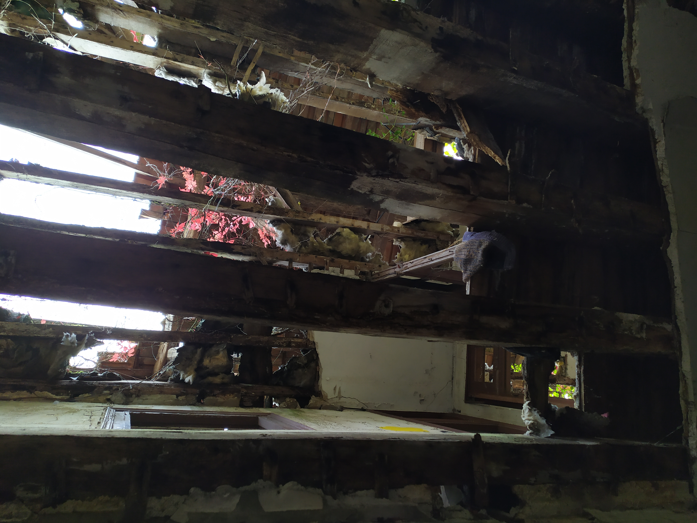
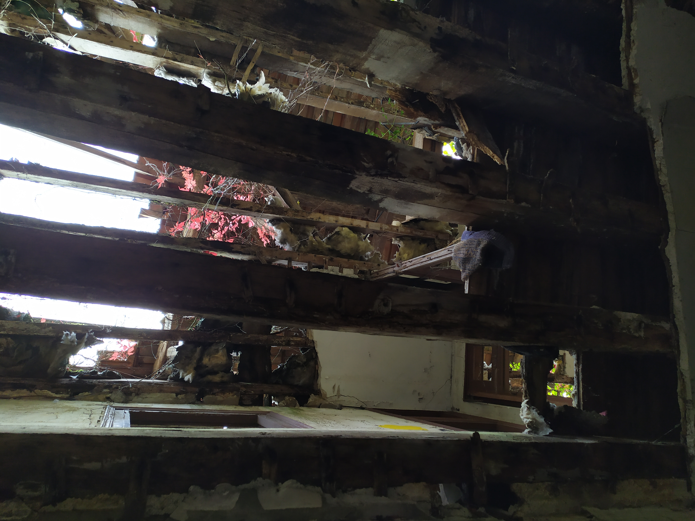


Il y avait pleins de graffitis et d'habits dans tout les sens. On voyait que le lieu fut probablement squaté pendant un temps. Au bout du manoir se trouvait une verrière, on aurait dit qu'elle avait été rajoutée des année après la construction du bâtiment. Comme si elle était plus moderne que tout le reste. Peut être avait elle été mieux conservée par le temps ? Il y a toujours pleins de questions qui nous sont posées dans ce genre de lieu. Personnellement je me pose souvent la question de comment les gens y vivaient, pourquoi un si beau lieu fut abandonné, etc... Pleins de questions que seules les archives pourraient y répondre. Bref, revenons à la visite. Pour accéder au premier étage j'ai remarqué qu'il y avait plusieurs traces de différents escaliers dans la maison mais un seul ressemblait encore à un escalier. Curieuse d'en voir un peu plus de cet étage je montai la moitié de ces escaliers avec grande prudence. Tout les sols en bois étaient pourris et risquaient de s'effondrer si je m'aventurai dessus. J'ai donc fait demi-tour, mais mon parcours ne s'arrêta pas là. Lors du tour exterieur j'avais aperçus une cave, il fallait donc que je la trouve ! Sous les escaliers je vis un trou qui menait au sous sol. J'entrepris cette descente et me retrouvai dans la cave. Elle était immense et prenait toute la largeur du manoir. Elle servait sûrement de cave à vin puisqu'il restait encore une étagère à bouteilles de vin. Et ce fut la fin de mon escapade dans le manoir.